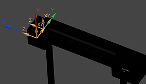

Add additional junctions to the pocket
In this activity, you will add an entry and an exit junction that will allow the probe head to simulate entry to, and exit from, the pocket when it retrieves a probe tool. These junctions will essentially match the tool mount and safe move junctions you have already defined.
-
In the Create Machine Component dialog box, define the probe head entry junction.
-
Repeat the activity you used to define the safe move junction, but this time leave the offset value set to 0.

-
Name the new set P1_SIM_ENTRY2.
Caution
The conjunction names are important to simulations. The junctions used to position the entry moves must be named Px_SIM_ENTRYn, where x is the tool pocket identifier and n ranges from 1 to 10 so that simulations occur sequentially.
-
-
Create a probe head exit junction that is identical to the safe move junction you created.
-
Repeat the activity you used to define the save move junction, but this time select the safe move CSYS as your reference CSYS, and do not define an offset value.

-
Name the set P1_SIM_EXIT1.
Caution
The conjunction names are important to simulations. The junctions used to position the exit move must be named Px_SIM_EXITn, where x is the tool pocket identifier and n ranges from 1 to 10.
In the Create Machine Component dialog box, in the Junctions section, the junctions List should now contain four items: T1, P1_SIM_ENTRY1, P1_SIM_ENTRY2, and P1_SIM_EXIT1.
-
-
At the top of the Edit Machine Component dialog box, in the Name box, type POCKET_ONE.
-
In the Classify Component section, select the _STATIC_HOLDER check box.
Note
If the class option is not available, click Add Class , type _STATIC_HOLDER, and select the check box.
-
Click OK.
-
Choose File→Save.
The first tool racket pocket is now completely defined. The pocket junctions are now visible in the Junctions column of the Machine Tool Navigator.